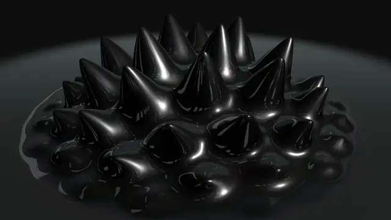
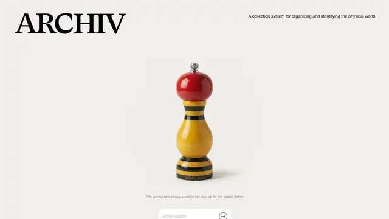
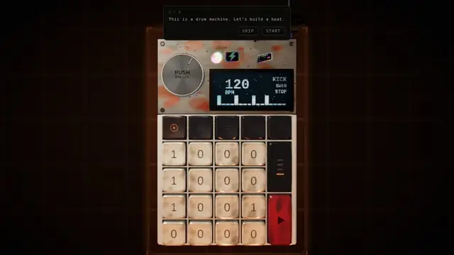
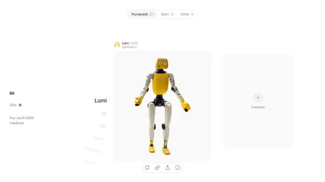
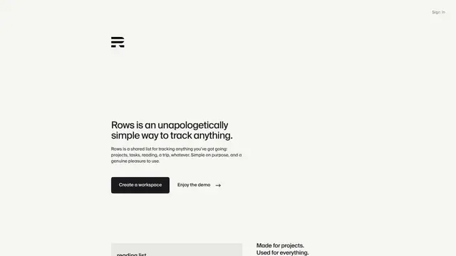
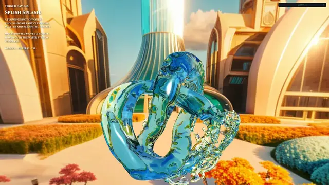
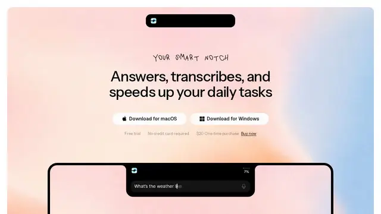
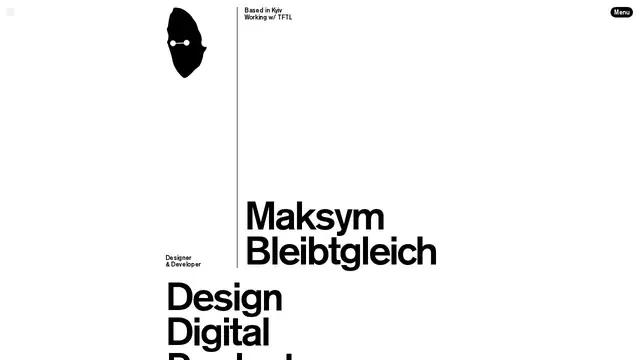

Ferrofluid Microphone
对着麦克风吹口哨，黑色磁流体会颤动、长刺、塌落；声音输入被翻译成了触感十足的形变。

打开网站 ↗它是什么：对着麦克风说话或唱歌，屏幕上的黑色磁流体就会长出尖刺；安静下来，它又塌回一滩。
好在哪：声音 → 形状的因果关系一眼就懂，而且材质像真的磁流体，黑亮、带反光。
怎么做到的：
- 液体由很多小粒子组成，每帧计算它们之间的推拉，形成流动感。
- 麦克风的音高和音量被实时分析，数值越大，“磁场”越强、尖刺越高。
- 鼠标/手指也能当作磁铁去拨它。
完整技术拆解
今日拆解 · Ferrofluid Microphone
- Live: https://robert.leitl.dev/artifacts/ferrofluid
- Gallery: https://mesh3d.gallery/experiment/ferrofluid-microphone
- Author: Robert Leitl
- Bundle:
/artifacts/ferrofluid/index-8a2ccd9a.js（约 267 KB）
为何选它
在 8 条里它把「麦克风音高 → 黑色磁流体长刺 / 塌落」做成可感知的因果链：既有完整的 GPU 流体模拟，又有 Web Audio 分析，视觉材质也够炫。Splish Splash 主要是流体玩具；Beat Machine 偏 UI/节奏反馈；bleibtgleich / Rows 更偏排版与微交互。Ferrofluid 的技术深度与「一眼就懂」的效果同时成立。
实际在源码里找到的技术栈
/* @license twgl.js 5.2.0 ... http://github.com/greggman/twgl.js */#version 300 es 开头；扩展枚举含 webgl2const Ls=new e("3.1.0") 且导出 Pane / BladeApi；仅在 URL 带 ?debug 时挂载new AudioContext、getUserMedia({audio:...})、createAnalyser()、fftSize = 2048ge(window,"resize").pipe(...) 的操作符形态；未在 bundle 内找到明确的 rxjs@x.y.z 字符串粒子数默认：NUM_PARTICLES = 500。平面高度图分辨率：planeResolution = 256。
核心效果怎么工作（源码 + 标明推测）
1. SPH 粒子模拟（确认）
GPU 上做经典 SPH（Smoothed Particle Hydrodynamics）：
- 状态存在纹理：
u_positionTexture、u_velocityTexture、u_forceTexture、u_densityPressureTexture - 邻域用网格哈希：
u_indicesTexture/u_offsetTexture+CELL_TEX_SIZE/CELL_SIZE（有 bitonic 风格的多 pass 排序） - 核函数常量在 UBO
u_SimulationParams里：POLY6 / SPIKY_GRAD / VISC_LAP / REST_DENS / GAS_CONST / VISC / MASS / H / HSQ —— 这是 Müller 式 SPH 的标准组合
Pass 大致顺序（确认）：
- 按位置写入 cell index
- 排序 indices
- 建 offset 表
- density + pressure（
poly6Weight） - 力（压力梯度 + 粘度
VISC_LAP） - integrate：
ai = fi / rho; vi += ai * dt，再叠加 pointer 力与边界阻尼
2. 麦克风 → 形变（确认）
mic → MediaStreamSource → AnalyserNode (fftSize=2048, minDecibels=-90)
→ getByteFrequencyData
→ 取能量最大的 frequency bin
→ freq = index * (sampleRate/2 / bufferLength)
→ 在 [MIN_FREQ=400, MAX_FREQ=2400] 上做 log2 归一化，再映射到 [-1, 1]
→ 经弹簧阻尼（targetZoomLerp / zoomOffsetMomentum）驱动 this.ZOOM
→ ZOOM 写入 shader uniform：u_zoom、u_spikeFactor集成 shader 里有明确的 zoom 力：
pi.xy += zoomForce * 0.008 * max(0., (1. - u_zoom * 2.5));高度/网格绘制 shader 里用 u_zoom 控制边缘与 spike 位移（u_spikeFactor）。
推测：尖刺观感主要来自「粒子被径向/向上推开 + 高度网格按密度/位移抬起 + 高光黑材质」，而不是单独的铁磁学方程；铁流体是视觉隐喻。
3. 指针交互（确认）
UBO u_PointerParams：pointerPos / pointerVelocity / pointerRadius / pointerStrength。在 integrate 中若粒子距指针 < radius，则叠加 pointerVelocity * pointerStrength * (1 - pr/radius)。另有一处 idle 微扰力。
4. 伪代码（忠实于源码结构）
each frame:
audio = peakFreqNorm() # [-1,1] or 0 if silent
ZOOM = spring(ZOOM, audio) # zoomOffsetMomentum damping
# GPGPU SPH
hash particles into cells
sort + build neighbor offsets
density, pressure = SPH_poly6(neighbors)
force = SPIKY_grad(pressure) + VISC_lap(velocity)
integrate(pos, vel, force, pointerForce, zoomForce(ZOOM))
# render
draw points / height mesh with spikeFactor(ZOOM), dark glossy shading如果我来重做（步骤清单）
- Vite + Canvas，申请
webgl2，引入 twgl.js 管 framebuffer / program。 - 实现 500 粒子的 RGBA32F 状态纹理 + ping-pong FBO。
- 写 SPH：density → force → integrate（先 2D），网格哈希邻域。
getUserMedia+AnalyserNode，把峰值频率映射到一个zoomuniform。- 用粒子生成 height map 或直接画 metaball/points，加高光黑色材质。
- 可选：Tweakpane 调 REST_DENS / VISC / POINTER_STRENGTH。
- 最后再加 entry 动画与麦克风按钮 UX。
证据文件
artifact.html、index-8a2ccd9a.js、index-295bf82f.css（本目录）







设计雷达 · 每天 8 个值得看的网站、App UI 和网页小游戏